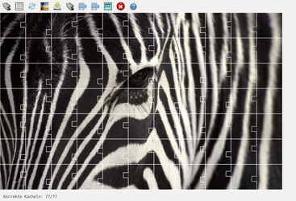
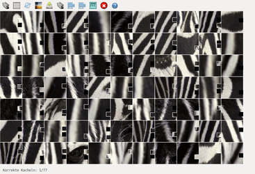

Picpuz
Dieser Artikel wurde für die folgenden Ubuntu-Versionen getestet:
Ubuntu 16.04 Xenial Xerus
Ubuntu 14.04 Trusty Tahr
Zum Verständnis dieses Artikels sind folgende Seiten hilfreich:
Picpuz  (Picture puzzle) ist neben Picsaw, Simplix Puzzle und Tetzle ein weiteres Puzzlespiel, welches beliebige Bilder als Vorlage nutzen kann. Konkret handelt es sich um ein Schiebepuzzle, dessen Spielprinzip darauf beruht, das immer zwei Spielsteine gegeneinander ausgetauscht werden. Die Anzahl der Puzzlesteine kann zwischen 12 und 1000 selbst festgelegt werden (Vorgabe: ca. 64, abhängig von der Abmessungen des Ausgangsbilds).
(Picture puzzle) ist neben Picsaw, Simplix Puzzle und Tetzle ein weiteres Puzzlespiel, welches beliebige Bilder als Vorlage nutzen kann. Konkret handelt es sich um ein Schiebepuzzle, dessen Spielprinzip darauf beruht, das immer zwei Spielsteine gegeneinander ausgetauscht werden. Die Anzahl der Puzzlesteine kann zwischen 12 und 1000 selbst festgelegt werden (Vorgabe: ca. 64, abhängig von der Abmessungen des Ausgangsbilds).
Das Spiel stammt vom gleichen Entwickler, der auch die Bildbearbeitung Fotoxx zur Verfügung stellt.
|  |
| Manche auf den ersten Blick einfache Motive... |
|  |
| ... können sich als echte Herausforderung erweisen. |
Installation¶
 Das Programm ist nicht in den offiziellen Paketquellen enthalten.
Das Programm ist nicht in den offiziellen Paketquellen enthalten.
Fremdpaket¶
Der Programmautor stellt ein Fremdpaket im DEB-Format zur Verfügung, allerdings nur für 64-bit-Systeme. Dieses kann heruntergeladen und manuell installiert [1] werden.
Hinweis!
Fremdpakete können das System gefährden.
Verwendung¶
Nach der Installation kann das Programm bei Ubuntu-Varianten mit einem Anwendungsmenü über "Spiele -> picpuz" gestartet [2] werden.
Nachdem man ein Motiv geladen hat (entweder über "Bild öffnen" oder via Drag'n'Drop aus dem Dateimanager), kann optional die Anzahl der Puzzlesteine eingestellt werden. Spannend wird es nach dem "Mischen" der Steine: nun wählt man mit der Maus und einem einzelnen Linksklick  nacheinander zwei Steine aus, die anschließend ihre Position tauschen. Mehr ist – außer Geduld und Kombinationsvermögen – nicht erforderlich.
nacheinander zwei Steine aus, die anschließend ihre Position tauschen. Mehr ist – außer Geduld und Kombinationsvermögen – nicht erforderlich.
Ein angefangenes Puzzle braucht nicht sofort fertig gestellt werden. Insbesondere bei einer größeren Anzahl von Puzzlesteinen kann man den Spielstand einfach speichern und später an der gleichen Stelle wieder fortsetzen. Der Spielstand wird im Ordner ~/.picpuz/ im Homeverzeichnis nach dem Muster BILDDATEI.TYP.puz abgelegt.
Die über eine Symbolleiste am oberen Fensterrand erreichbaren Funktionen des Programms sind nachfolgender Tabelle zu entnehmen.
| Funktionen | |
| Symbol | Beschreibung |
| Bilddatei öffnen | |
| Anzahl der Puzzlesteine festlegen | |
| Puzzlesteine mischen | |
| Bild des Originalmotivs in separatem Fenster anzeigen | |
| Puzzle speichern | |
| gespeichertes Puzzle öffnen | |
| Hilfestellung: 2 Puzzlesteine tauschen | |
| Hilfestellung: 8 Puzzlesteine tauschen | |
 | Randfarbe der Puzzlesteine ändern (weiß, rot, grün oder schwarz) |
| Programm beenden | |
| (englischsprachige) Hilfe* zum Spiel im Browser öffnen | |
| | zwei Steine vertauschen |
 | einen Stein an seine Originalposition schieben |
* Die Datei usr/share/picpuz/data/userguide-XX.html (XX steht für ein Sprachkürzel; derzeit ist nur Englisch vorhanden) enthält eine kurze Anleitung und kann mit einem beliebigen Browser geöffnet werden.

 Programmübersicht
Programmübersicht- Erstellt mit Inyoka
-
 2004 – 2017 ubuntuusers.de • Einige Rechte vorbehalten
2004 – 2017 ubuntuusers.de • Einige Rechte vorbehalten
Lizenz • Kontakt • Datenschutz • Impressum • Serverstatus -
Serverhousing gespendet von